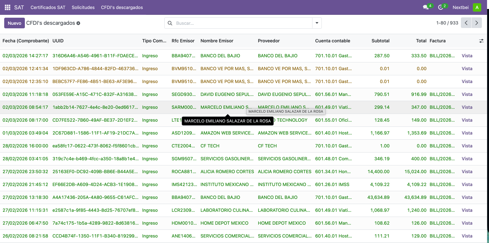
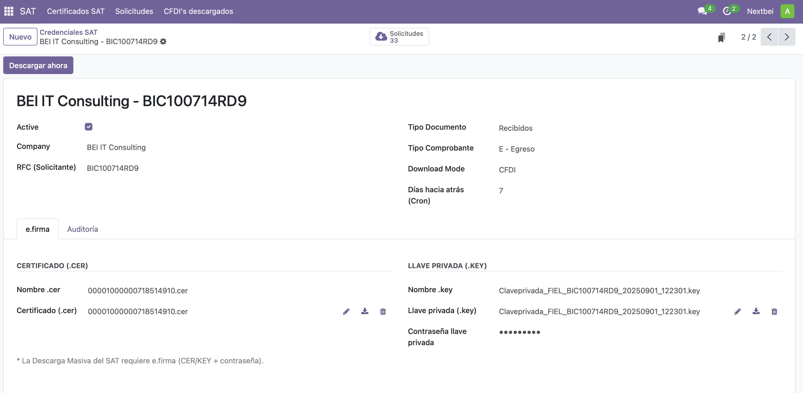

Los equipos de contabilidad en México dedican horas cada mes a descargar manualmente comprobantes del portal del SAT, importarlos y compararlos contra los registros de Odoo. Este módulo elimina ese proceso por completo: la descarga, el almacenamiento y la conciliación ocurren de forma automática y programada directamente dentro de Odoo.
Descarga automática vía web service oficial
Solicita y descarga paquetes ZIP de CFDI directamente al SAT usando la
e.firma (FIEL) del contribuyente, sin acceder manualmente al portal.
CFDI emitidos y recibidos
Soporta todos los tipos de comprobante: Ingreso (I), Egreso (E),
Pago (P), Nómina (N) y Traslado (T).
Almacenamiento estructurado
Cada CFDI se registra con UUID, emisor, receptor, importes, moneda,
método de pago y el XML original adjunto.
Conciliación automática en dos pasos
Vincula cada CFDI con su asiento contable por UUID o por coincidencia
de RFC, fecha e importe. Para los que no tienen match, crea el asiento
directamente desde el XML con un solo clic.
Tarea programada (cron)
Ejecuta solicitudes y descargas de forma automática en el horario
configurado, sin intervención del usuario.
Multi-empresa
Cada compañía gestiona sus propias credenciales e.firma y CFDI
de forma completamente independiente.
Todos los comprobantes descargados del SAT en una sola vista, con estado de conciliación, proveedor vinculado y cuenta contable.

Registra el certificado (.cer) y llave privada (.key) de la FIEL por empresa. La descarga arranca con un solo clic o de forma automática vía cron.

zeep, cryptography, lxml